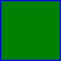

<!--
    SVG <svg>

    É uma marcação, estilo html, mas não é para textos, e sim para fazer imagens.
    Possuimos elementos para gerar formas.

    Para entender melhor
        - Imagem rasterizada x Imagem vetorizada

    Benefícios
        - Mais leve
        - Mais detalhada
        - Maior acessibilidade e CEO
        - Pode ser editada visa CSS ou atributos

    Desvantagens
        - Pode ser mais complicado de trabalhar
        - Quanto mais complexa a imagem, mais trabalho para o navegador
        - Navegadores mais antigos não possuem suporte a essa tag
        - Navegadores não conseguem fazer cache

    Para fotografias, ainda prefira usar imagens rasterizadas (.png, .jpg, .jpeg).
-->

<!-- Imagem rasterizada 
     
-->

<!-- Imagem vetorizada
    <svg width="200" height="200">
        <circle cx="100" cy="100" r="80" stroke="green" stroke-width="4" fill="yellow"/>
    </svg> 
-->


